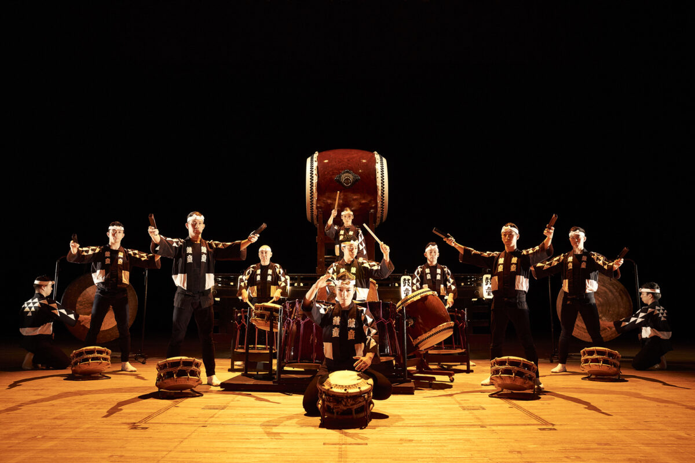

O que é Taiko?
Taiko (太鼓) é um termo que se refere a uma variedade de tambores tradicionais do Japão. O taiko é utilizado em diversos contextos, desde cerimônias religiosas até performances artísticas contemporâneas.
Taiko (太鼓) é um termo que se refere a uma variedade de tambores tradicionais do Japão. O taiko é utilizado em diversos contextos, desde cerimônias religiosas até performances artísticas contemporâneas.
O Teatro Noh (能楽, Nōgaku) é uma forma tradicional de teatro japonês que combina elementos de drama, música e dança. Originado no século XIV, ele é conhecido por sua estética minimalista, uso de máscaras e linguagem poética.
O Yosakoi Soran (よさこいソーラン) é uma dança contemporânea japonesa que surgiu como resultado da união do Yosakoi Bushi, uma dança característica da província de Kochi, com outra dança típica de Hokkaido, o Soran Bushi.
Meu blog é um espaço dedicado a compartilhar histórias, tradições e curiosidades sobre o Japão, desde suas artes clássicas, como o teatro Noh e o taiko, até as tendências modernas da música, gastronomia e tecnologia! 🌸🎌
Entre em contato conosco através do email: contato@ayasblog.com